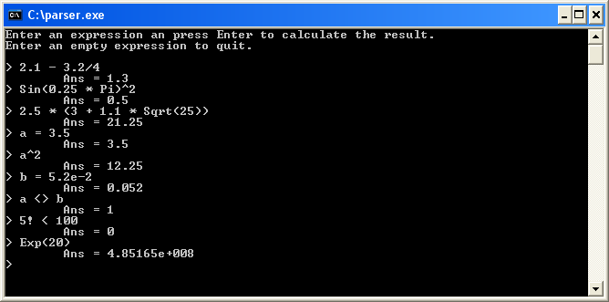

Description
On this page you find the source code for an expression parser written with C++. It is a small console program with all common mathematical features. The project was written using the free and cross platform CodeBlocks IDE. The project consist of ten source files, listed at the left of this page. You can view the source files online, or download the project including executable.
Features
The features of the expression parser are:-
Operators:
- & | << >>
- = <> < > <= >=
- + -
- * / % ||
- ^
- !
-
Functions:
- Abs, Exp, Sign, Sqrt, Log, Log10
- Sin, Cos, Tan, ASin, ACos, ATan
- Factorial
-
Variables:
- Built-in: Pi, e
- You can define your own variables
-
Other:
- Support for scientific notation
- Built-in error handling
Screenshot

References
The expression parser is built in the way most common parsers are built. The code is based on the example "A mini C++ Interpreter" from the book "The art of C++" by Herbert Schildt.